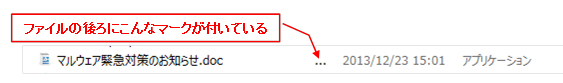
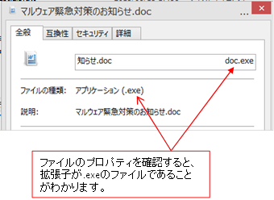
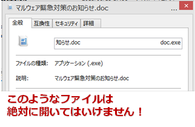
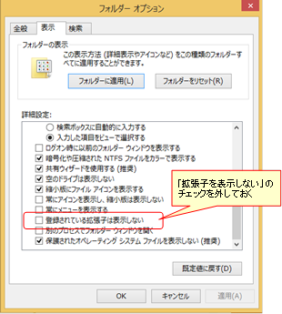

あなたが今、行った行為（メールに記載されているURLリンクを安易にクリックしてしまうという行為）は、あなたが今使っているパソコンを、コンピュータウィルスに感染させてしまうかもしれない危険な行為です。
これは訓練ですので何も害はありませんが、もし、これが訓練でなかった場合は、深刻な問題が発生する可能性が十分あり得ることを、この機会に知って下さい。標的型攻撃メールは、特定の企業を狙って顧客情報や重要な社内情報などを盗み取る、また、社内システムに侵入して業務を継続できないようにしてしまうなど、会社に甚大な被害をもたらすものです。
あなたが今、開いたメールは、この「標的型攻撃メール」による攻撃の手口の一例を模した訓練用のメールです。
今回は訓練なので本物ではありませんが、もし、これが本当の標的型攻撃メールであった場合は、あなたのパソコンがコンピュータウィルスに感染し、社内に甚大な被害をもたらすきっかけとなっていたかもしれません。 標的型攻撃のターゲットになるのは、なにも政府や軍事関連の組織ばかりではありません。当社もその標的とされる可能性は十分あります。「ウチの会社には関係ない話」ではないのです。
あなたの元に、いつ、本物の標的型攻撃メールが送られてきたとしても不思議ではありません。今回の訓練をきっかけに、標的型攻撃メールについて理解し、うっかり被害に遭ってしまうことのないよう、受け取ったメールが標的型攻撃メールでないかどうか、常に注意を怠らないようにして下さい。
会社に被害をもたらすことを目的としたコンピュータウィルスが添付されていたり、また、コンピュータウィルスに感染させるためのサイトに誘導するためのURLリンクが記載されているなどの、いわゆる悪意を持ったメール（標的型攻撃メール）が、いつ私達の元に送られてきても不思議ではありません。以降に記載されている「気づきポイント」をよく読んで、標的型攻撃メールにうっかり引っかかってしまうことのないよう、くれぐれも注意して下さい。
「標的型攻撃メール」には主に以下の３つのパターンがあります。
悪意のあるプログラムを潜り込ませようとするための手口は異なりますが、メールの受信者に対して、悪意のあるプログラムを潜り込ませるためのきっかけを作らせようと仕向ける点においては、いずれも同じです。
このための手口として用いられる方法は主に以下の2つ、また、これらの方法を巧みに組み合わせたものです。前者は、親しい人物や関係者、お客様など、メールを送られてくることが不自然と感じられないような相手を装い、文面も自然な内容を装う形式が多く見られます。
代理を装って議事録を送付するような形式や、システム管理者を装って特定のWebサイトに誘導するような形式はこのパターンと言えます。そして後者は、人の心理の隙をついて、そうしたくなるよう仕向ける形式です。
例えば、「http://xxxx.tv/xxxに御社商品についての批判が多数書き込まれていますが、書かれている事は本当でしょうか？」などといったメールが届いたらどうでしょうか？「怪しいかも？」という思いがよぎったとしても、「自社商品に対する批判が」と聞かされたら、つい、アクセスしてしまうのではないでしょうか？
このように、心理の隙を突くなどの方法は「ソーシャルエンジニアリング」と呼ばれ、その内容は非常に巧妙且つ、狡猾なものとなってきています。
あの手この手でメールの読み手を騙し、如何に目的を達成するか？これが攻撃者の関心事なのです。あなたは、このような攻撃者の狙いをかわすことができるでしょうか？
「標的型攻撃メール」であるかどうかを見分ける究極の方法は、「メール送信者本人に確かめる」という方法です。もしくは、送られてくると前もってわかっているものしか開かないというのも、有効な方法です。
しかし、業務の現場においては、それが難しいことのほうが多いというのが実際です。例えば、お客様や地位のある方を装って送られてくるようなメールでは、確かめる行為自体が失礼に当たるため、したくてもできないのが現実です。
攻撃者側はこのような社会通念までも逆手に取って攻撃を仕掛けてくるため、油断はできません。「標的型攻撃メール」の被害に遭わないためには、以下のような点に注意しましょう。
パソコン上でファイル名を見た際に、ファイル名の後ろに…の文字が付いているような場合は、隠れて見えていないファイル名が存在する事を示しています。拡張子が.exeであるファイルをWordのドキュメントなどに見せかけたい場合は、ファイル名に長い空白文字を連ねて、見られては困る.exeの文字が隠れて見えないようにしているケースがあります。
このように、ファイル名の後ろに…の文字が付いているファイルを見つけた場合は、ファイルのプロパティを確認し、拡張子が.exeのファイルでないかどうかを確認しましょう。
通常、ファイル名に空白文字を長く連ねるようなことはしないので、拡張子を隠蔽するかのようなファイル名が使われている場合は、悪意のファイルであることを真っ先に疑うべきでしょう。
拡張子が.exeとなっているファイルはプログラムファイルです。通常の業務においては、事前のやり取り無しに、拡張子が.exeとなっているファイルをメールで送るようなことはほとんどありません。
ある日突然、拡張子が.exeとなっているファイルが、zip等の圧縮ファイルとして送られてくるようなことがあった場合は、絶対に開かないようにしましょう。
なお、自己解凍型の圧縮ファイル（ファイルをダブルクリックすると自動で解凍が行われる圧縮ファイル）を使って添付ファイルをやり取りされている場合もあるかと思いますが、これは悪意のあるプログラムとの見分けがつかないので、自己解凍型の圧縮ファイルは使わないようにすることをお奨めします。
ちなみに、拡張子が.exeになっているものだけが、悪意のあるファイルというわけではありません。他にも、.scrや.batなど、本来使われているはずの拡張子と異なるもの、例えば、Wordファイルであれば、.docや.docxとなっていないものは、本当に開いて良いファイルかどうかを必ず確かめるようにしましょう。
また、パソコンの設定で、拡張子を表示しない設定となっている場合は、拡張子を表示するよう設定し、ファイルの拡張子を確認できるようにしておきましょう。
 添付ファイルを開かせようとする手口として、普段使い慣れているExcelやWord、PDFといったドキュメントに偽装したファイルを使うというものがあります。
ファイルのアイコンにExcelやWordなどとそっくり、もしくは、ほとんど同じものを使用し、ファイルの拡張子も、WordやExcelの拡張子のように見せかけることで、一見しただけではそれと気づかせないようにするのが攻撃者の手口です。普段見ているアイコンと何だか違うと感じた場合は、拡張子が.exeのファイルでないかどうかを確認してみて下さい。
また、WordやExcelなどのファイルであったとしても、悪意のあるマクロの実行によって、被害を受ける場合がありますので、怪しいと思われるファイルである場合は、安易に開かない、また、マクロの実行を許容しないといった対応を取るようにして下さい。